casimir user guide: one survey on Island X
Source:vignettes/casimir-02-user-guide.Rmd
casimir-02-user-guide.Rmd
This walkthrough designs a catch survey on Island X, rolls it, raises
it to catch per species and fleet segment, and then judges the design by
spinning it many times and running it for five years. Every step is a
plain function; the app (run_app()) calls the same
ones.
1. Build the island
library(casimir)
fish <- cas_fishery(island_x(), seed = 1)
fish
#> <cas_fishery> 155841 landings, 225 boats, 9 sites, 10 species, years 2016-2025
#> segment
#> site canoe small_motor large_motor
#> LS1 2781 6208 1504
#> LS2 19599 3538 0
#> LS3 15232 5848 0
#> LS4 0 4150 2962
#> LS5 24155 2166 0
#> LS6 6727 4222 879
#> LS7 1429 7104 2891
#> LS8 18341 4537 0
#> LS9 17334 2456 1778Ten years are simulated: five years of burn-in, in which stocks respond to fishing and boats enter and leave, then a five-year sampling programme.
plot(fish)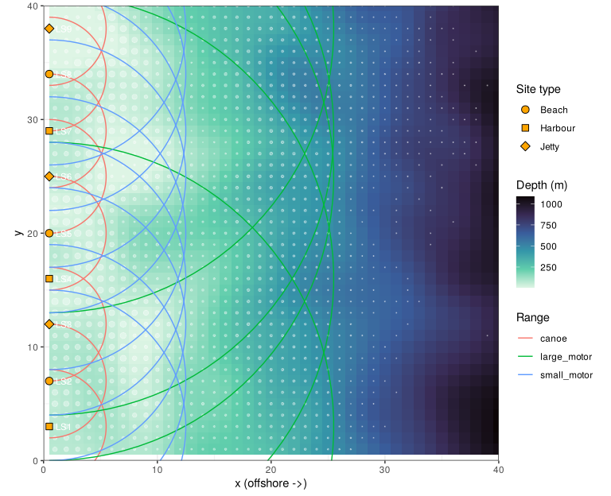
Where the fish live, where each segment fishes, and where the catch comes from:
plot_species_map(fish)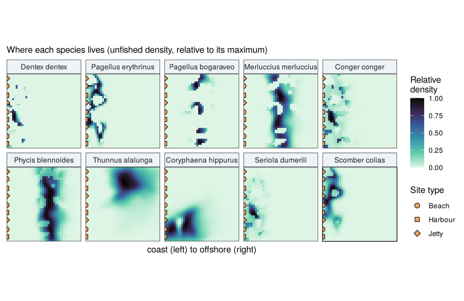
plot_effort_map(fish, by = "segment")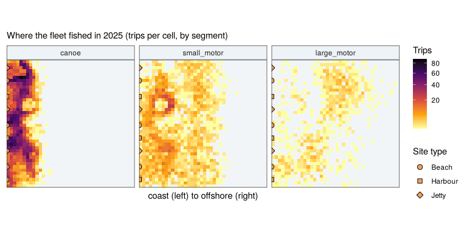
plot_catch_map(fish, species = c("Scomber colias", "Thunnus alalunga", "Merluccius merluccius"),
by = "segment")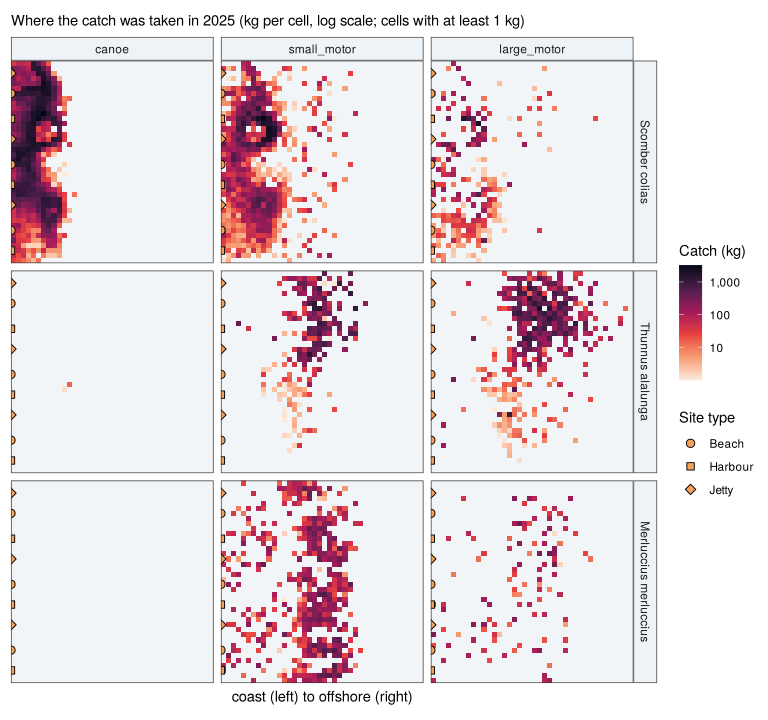
The population. fish$landings holds
every trip: site, date, segment, hours fished, landing hour and the true
landed weight of each species. This census is the answer key: no real
survey has one.
year <- max(fish$years)
truth <- cas_truth(fish, years = year, by = c("year", "segment"))
xtabs(round(kg / 1000, 1) ~ species + segment, truth)
#> segment
#> species canoe large_motor small_motor
#> Conger conger 1.3 0.0 3.2
#> Coryphaena hippurus 12.1 35.0 57.5
#> Dentex dentex 0.0 0.0 0.0
#> Merluccius merluccius 0.0 8.4 50.2
#> Pagellus bogaraveo 0.0 0.3 3.7
#> Pagellus erythrinus 2.1 0.0 1.5
#> Phycis blennoides 0.0 3.9 16.1
#> Scomber colias 215.1 16.6 81.5
#> Seriola dumerili 3.1 0.5 2.2
#> Thunnus alalunga 0.0 73.8 40.22. The frame survey
What the planner knows: boats by site and segment, and fishing days.
frame <- frame_survey(fish)
frame
#> <cas_frame> survey year 2025 | frame survey 2025
#> segment
#> site canoe large_motor small_motor
#> LS1 3 3 8
#> LS2 24 0 4
#> LS3 20 0 9
#> LS4 0 4 5
#> LS5 26 0 2
#> LS6 8 1 7
#> LS7 2 3 7
#> LS8 22 0 5
#> LS9 21 3 4
#> Fishing days by quarter: 77, 78, 79, 793. Design and betting slip
Six site-days per site type and quarter, three landings per segment at each visit, a 10 kg basket from each.
d <- cas_design(m = 6, n = 3, w_kg = 10, name = "A")
d
#> <cas_design> A
#> PSUs per site type x quarter: 6 ( srs )
#> landings per segment and visit: 3
#> subsample: 10 kg in 0.5 kg baskets
design_cost(d, fishery = fish) # enumerator-hours per year
#> [1] 936Betting slip. Before rolling: what CV do you expect for Scomber colias, the main species? And for Dentex dentex, the rarest?
4. Roll
s <- draw_sample(fish, d, year = year, seed = 2)
s
#> <cas_sample> A | year 2025 | 72 site-days, 263 landings sampled, 1922.5 kg subsampled
head(s$A, 6) # Form A: landings counted at each visit, by segment
#> psu date site site_type quarter segment N boats
#> 1 P001 2025-01-04 LS5 Beach 1 canoe 7 26
#> 2 P001 2025-01-04 LS5 Beach 1 small_motor 1 2
#> 3 P001 2025-01-04 LS5 Beach 1 large_motor 0 0
#> 4 P002 2025-01-13 LS8 Beach 1 canoe 2 22
#> 5 P002 2025-01-13 LS8 Beach 1 small_motor 3 5
#> 6 P002 2025-01-13 LS8 Beach 1 large_motor 0 0
head(s$B, 6) # Form B: sampled landings (W landed, w basket)
#> psu trip segment vessel hours W w
#> 1 P001 141801 canoe V130 4.0 12.2 10.00
#> 2 P001 141820 canoe V29 9.0 41.5 10.00
#> 3 P001 141854 canoe V46 4.2 0.1 0.08
#> 4 P001 142310 small_motor V163 2.6 71.4 10.00
#> 5 P002 141927 canoe V87 3.7 27.6 10.00
#> 6 P002 141959 canoe V06 3.6 71.3 10.00
head(s$C, 6) # Form C: species weights in the basket
#> psu trip species w_s
#> 1 P001 141801 Seriola dumerili 0.50
#> 2 P001 141801 Scomber colias 9.50
#> 3 P001 141820 Seriola dumerili 1.00
#> 4 P001 141820 Scomber colias 9.00
#> 5 P001 141854 Pagellus erythrinus 0.08
#> 6 P001 142310 Coryphaena hippurus 9.50The week x site grid of the training deck, for one stratum:
plot_design_grid(s, "Beach", quarter = 1)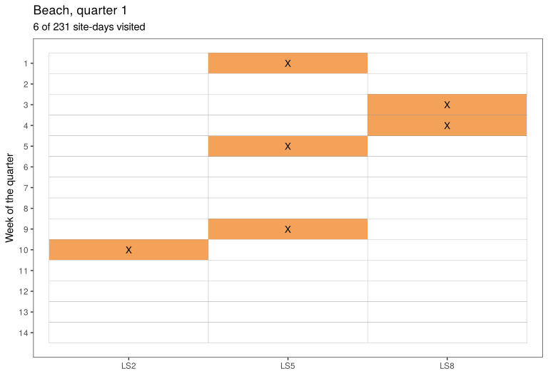
How much of the fishery the sample saw, stage by stage:
plot_funnel(s, fish)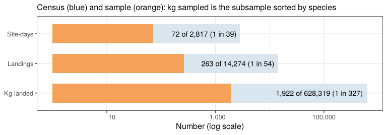
And where the sampled boats had been fishing:
plot_sample_map(s, fish)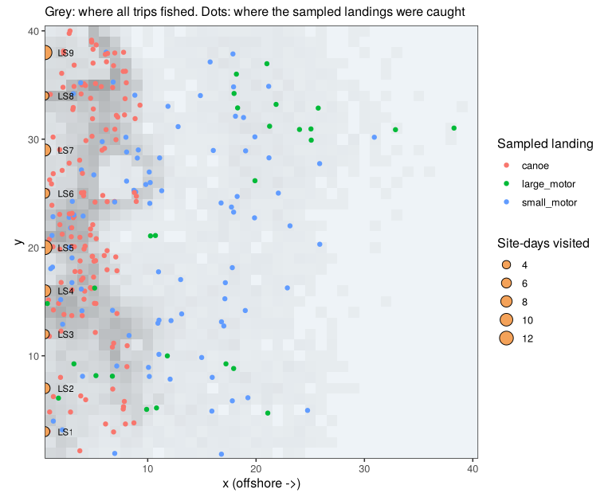
5. Raise
e <- estimate_catch(s)
e
#> <cas_estimate> route: psu | year 2025
#> species estimate se cv
#> Dentex dentex 0.00 0.00 0.00
#> Pagellus erythrinus 3.49 1.16 0.33
#> Pagellus bogaraveo 3.40 2.17 0.64
#> Merluccius merluccius 41.99 16.89 0.40
#> Conger conger 2.63 0.77 0.29
#> Phycis blennoides 40.65 18.76 0.46
#> Thunnus alalunga 196.53 57.08 0.29
#> Coryphaena hippurus 104.85 34.31 0.33
#> Seriola dumerili 3.97 0.96 0.24
#> Scomber colias 345.52 41.71 0.12
#> (tonnes)Each step is kept: e$landing (basket to landing),
e$psu (landings to the site-day), e$stratum
(site-days to the stratum).
plot_estimate(e, fish)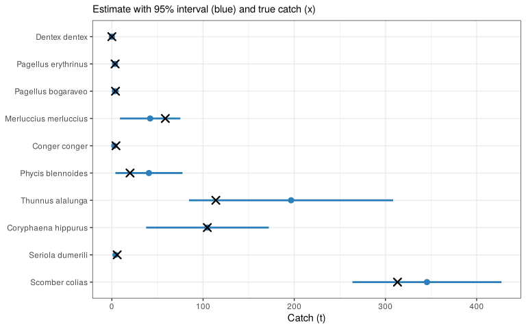
By fleet segment. Each segment is raised in its own strata, so catch by species and segment comes straight out:
plot_catch_by(e, by = "segment", fishery = fish)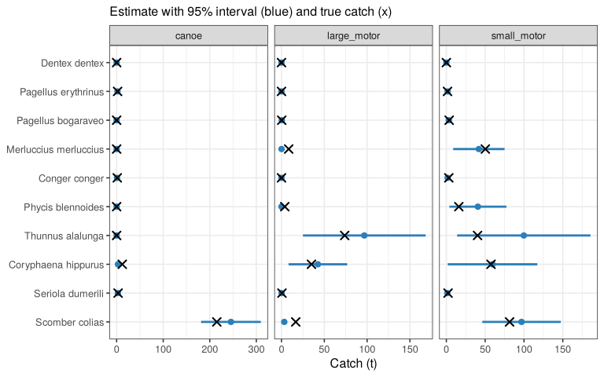
head(catch_by(e, by = "segment", fishery = fish))
#> year segment species estimate se cv lower
#> 1 2025 canoe Dentex dentex 0.000 0.0000 0.0000000 0.0000
#> 2 2025 large_motor Dentex dentex 0.000 0.0000 0.0000000 0.0000
#> 3 2025 small_motor Dentex dentex 0.000 0.0000 0.0000000 0.0000
#> 4 2025 canoe Pagellus erythrinus 1813.461 605.2217 0.3337385 627.2481
#> 5 2025 large_motor Pagellus erythrinus 0.000 0.0000 0.0000000 0.0000
#> 6 2025 small_motor Pagellus erythrinus 1672.554 984.3615 0.5885380 0.0000
#> upper true rel_error covered
#> 1 0.000 6.269869e+00 -1.0000000 FALSE
#> 2 0.000 1.189843e-02 -1.0000000 FALSE
#> 3 0.000 2.231641e+01 -1.0000000 FALSE
#> 4 2999.673 2.050722e+03 -0.1156965 TRUE
#> 5 0.000 9.521303e+00 -1.0000000 FALSE
#> 6 3601.867 1.494224e+03 0.1193461 TRUEBlocks can be any combination of segment, site type and quarter:
plot_catch_by(e, by = c("site_type", "segment"), fishery = fish,
species = c("Scomber colias", "Thunnus alalunga", "Merluccius merluccius",
"Pagellus erythrinus"))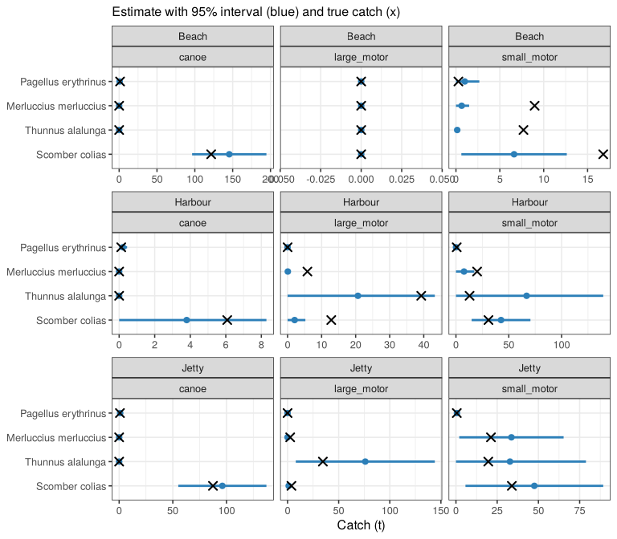
Small cells. A species that a segment lands rarely is often missed entirely: an estimate of zero with no interval. Totals are more reliable than their parts.
6. Spin: is the design any good?
One sample is one estimate. Spinning repeats the whole survey on the same island; here design A against design B, which costs about the same but visits more site-days (8 per stratum) and samples one landing per segment.
ev_a <- replicate_design(fish, d, R = 200, seed = 3)
ev_b <- replicate_design(fish, cas_design(m = 8, n = 1, w_kg = 10, name = "B"), R = 200, seed = 3)
c(A = ev_a$cost, B = ev_b$cost)
#> A B
#> 512.6302 534.3088
plot_spin(list(A = ev_a, B = ev_b))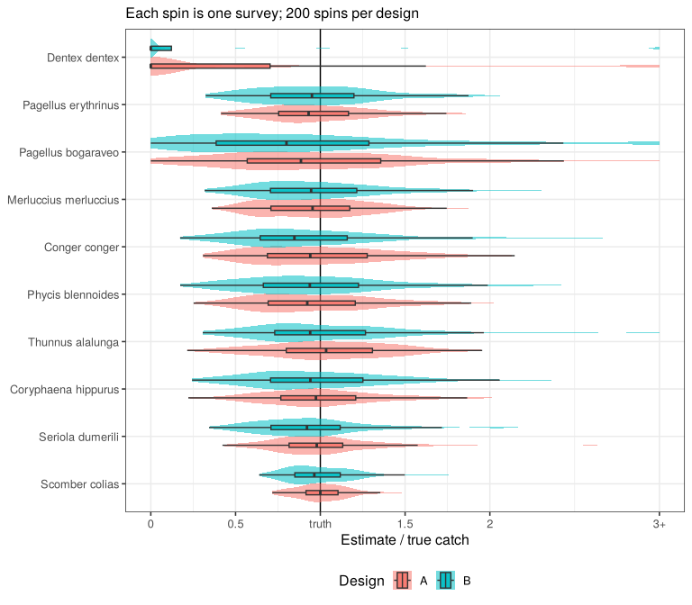
plot_eval(rbind(data.frame(design = "A", ev_a$summary),
data.frame(design = "B", ev_b$summary)))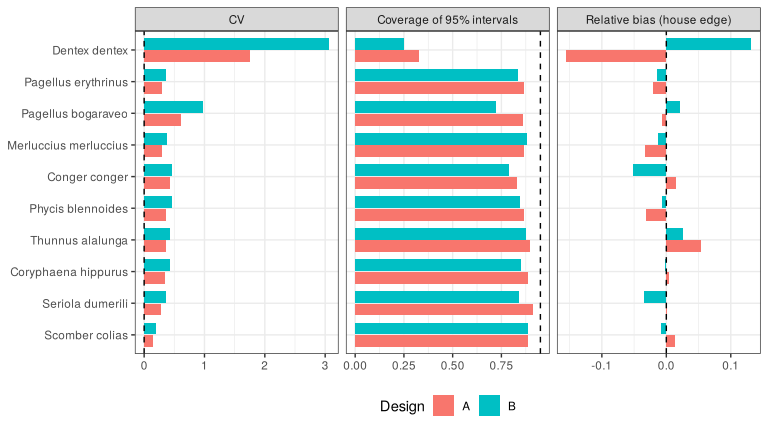
Reading the spin. The boxes sit on the truth: the estimators are unbiased. The spread is the precision: narrow for the main species, wide for the rare ones. At about the same cost, design A is more precise for every species: on Island X the landings of one day differ a lot (different boats, tactics and grounds), so sampling three of them per visit pays more than visiting more site-days.
7. A five-year programme
The same design in each of the last five years. With
frame = "first", the frame survey of the first year is used
throughout.
sv <- run_survey(fish, d, frame = "first", seed = 4)
plot_series(sv, fish)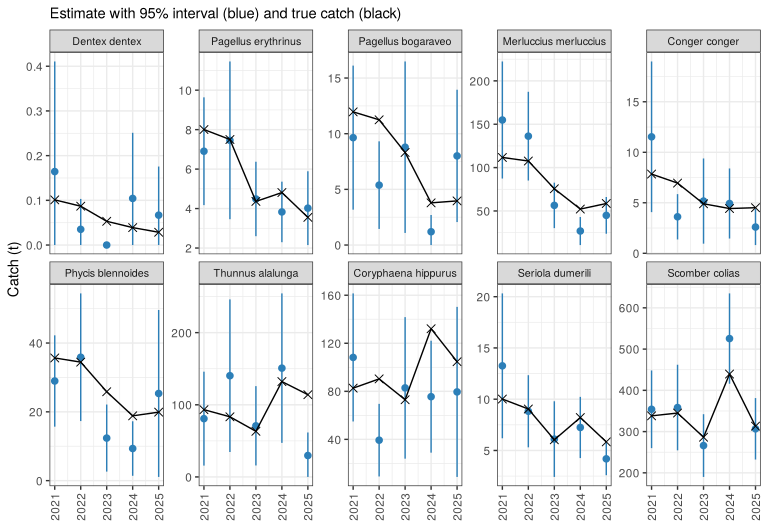
By segment, for three species:
plot_series(sv, fish, by = "segment",
species = c("Scomber colias", "Thunnus alalunga", "Merluccius merluccius"))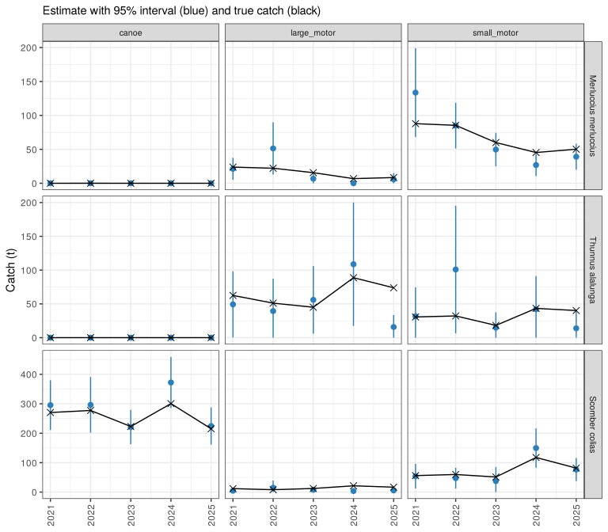
8. Plant a problem
The trainer switches on a field problem; the trainee looks for its signature. Here the enumerator leaves at 13:00.
ev_sw <- replicate_design(fish, d, R = 200, seed = 3, artefacts = artefacts(short_watch = 13))
plot_spin(list(A = ev_a, `A, short watch` = ev_sw))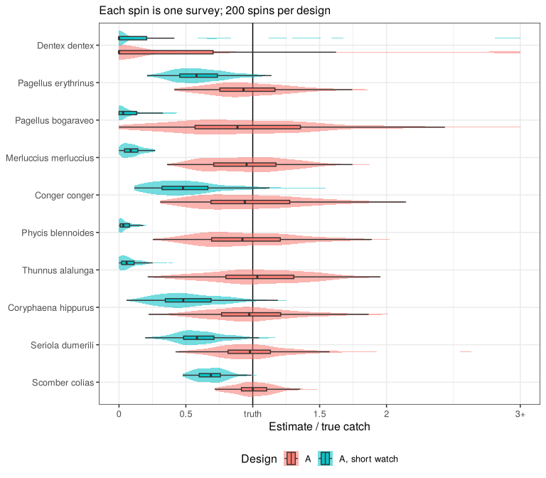
Warning flag. Long trips land late: the offshore species of the large motor boats almost vanish, while coastal canoe species lose a third. A segment common in the frame but rare in Form A points to the watch hours.
9. Cash out
export_survey(s, dir = "survey_A") # for trainees
export_survey(s, dir = "survey_A_key", answer_key = fish) # with the answer key